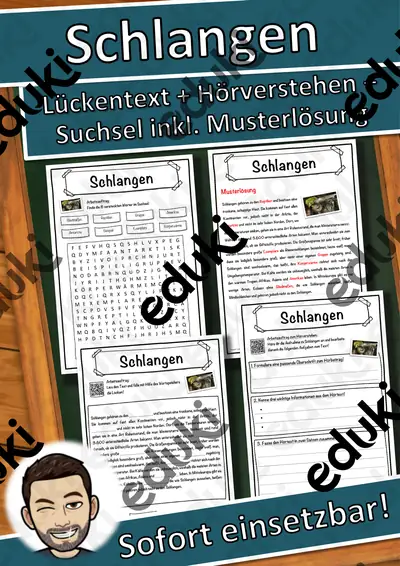
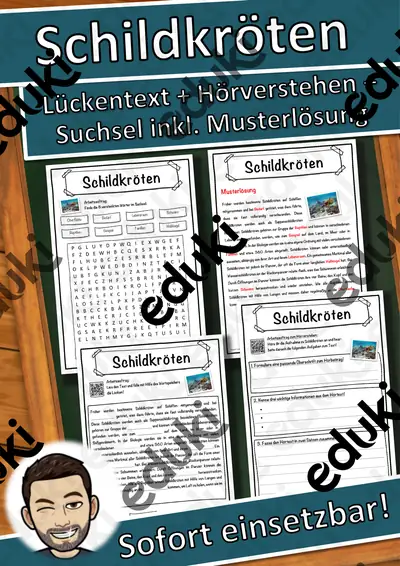

Reptilien und Amphibien: Arbeitsblätter für Klasse 4–8 (Biologie)
Reptilien und Amphibien zeigen, wie Anpassung an Land und Wasser aussieht. Der Unterricht vergleicht Haut, Atmung und Entwicklung, vom Frosch bis zur Schlange.
Gearbeitet wird in der Regel an Kaltblütigkeit, Metamorphose und Haut, ergänzt um Eiablage, Winterstarre und Schuppen.
Im Fach Biologie gehört das Thema nach den Lehrplänen der Länder zum festen Programm, überwiegend in den Klassen 4 bis 8. Die Schülerinnen und Schüler unterscheiden Reptilien und Amphibien und beschreiben deren Entwicklung.
Für den Einstieg in Reptilien und Amphibien bieten sich Aufgaben zu Kaltblütigkeit an, zum Üben solche zu Metamorphose und Haut, zur Wiederholung vor einer Lernkontrolle ein Blick auf Schuppen. Die Lösungen liegen bei, sodass im Unterricht niemand nachschlagen muss. Zur Differenzierung eignen sich die Lesespurgeschichten mit ihren drei Niveaustufen.
Die Auswahl zum Thema umfasst derzeit 16 Titel, zum Beispiel Die Schildkröte, Das Chamäleon und Das Krokodil. Dazu zählen 5 Lesespurgeschichten und 11 Lückentexte mit Hörverstehen für Klasse 5–8. Froschlaich in der Schulwanne zu beobachten ist, falls erlaubt, unvergesslich; alternativ helfen Bildreihen.
Das gehört zum Thema
Passende Arbeitsblätter und Materialpakete

Die Schildkröte – Lesespurgeschichte mit Rätselaufgaben (Klasse 8)

Das Chamäleon – Lesespurgeschichte mit Rätselaufgaben (Klasse 8)

Das Krokodil – Lesespurgeschichte mit Rätselaufgaben (Klasse 8)

Der Frosch – Lesespurgeschichte mit Rätselaufgaben (Klasse 5)

Die Schlange – Lesespurgeschichte mit Rätselaufgaben (Klasse 7)

Schlangen Lückentext mit Wortspeicher Hörverstehen und Suchsel

Schildkröten Lückentext mit Wortspeicher Hörverstehen und Suchsel

Salamander Lückentext mit Wortspeicher Hörverstehen und Suchsel

Reptilien Lückentext mit Wortspeicher Hörverstehen und Suchsel

Frösche Lückentext mit Wortspeicher Hörverstehen und Suchsel

Kröten Lückentext mit Wortspeicher Hörverstehen und Suchsel

Krokodile Lückentext mit Wortspeicher Hörverstehen und Suchsel

Geckos Lückentext mit Wortspeicher Hörverstehen und Suchsel

Eidechsen Lückentext mit Wortspeicher Hörverstehen und Suchsel

Chamäleon Lückentext mit Wortspeicher Hörverstehen und Suchsel

Amphibien Lückentext mit Wortspeicher Hörverstehen und Suchsel
Häufige Fragen
Für welche Klassenstufe passen die Arbeitsblätter zu Reptilien und Amphibien?
Passend sind Klasse 5–8. Von den 16 Titeln wenden sich die meisten an Klasse 6, einige lassen sich differenzierend auch in benachbarten Stufen nutzen.
Welche Inhalte decken die Materialien zu Reptilien und Amphibien ab?
Inhaltlich reicht die Auswahl von Kaltblütigkeit über Metamorphose und Haut bis zu Winterstarre; Details stehen bei den einzelnen Materialien.
Wie setze ich Reptilien und Amphibien im Unterricht ein?
Beginnen Sie mit einem Einstieg zu Kaltblütigkeit und ergänzen Sie nach Bedarf. Froschlaich in der Schulwanne zu beobachten ist, falls erlaubt, unvergesslich; alternativ helfen Bildreihen.
Mehr Material nach Fach und Klasse
- Alle Materialien Biologie
- Arbeitsblätter Biologie Klasse 4
- Arbeitsblätter Biologie Klasse 5
- Arbeitsblätter Biologie Klasse 6
- Arbeitsblätter Biologie Klasse 7
- Arbeitsblätter Biologie Klasse 8
- Unterrichtsmaterial Klasse 4
- Unterrichtsmaterial Klasse 5
- Unterrichtsmaterial Klasse 6
- Unterrichtsmaterial Klasse 7
- Unterrichtsmaterial Klasse 8
Verwandte Lehrplanthemen
- Atmung, Verdauung und Organe (Biologie, Klasse 5–9)
- Fische und Meerestiere (Biologie, Klasse 4–8)
- Fotosynthese (Biologie, Klasse 5–9)
- Herz und Blutkreislauf (Biologie, Klasse 5–9)
- Ökosysteme und Nahrungsnetze (Biologie, Klasse 5–9)